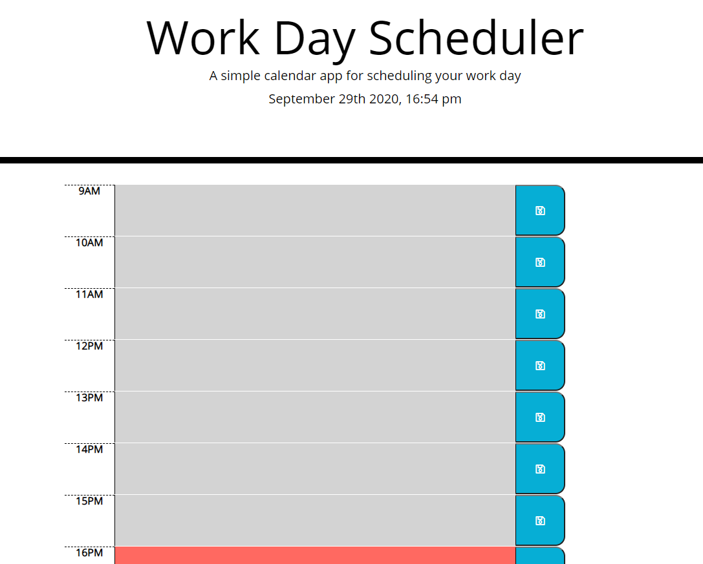
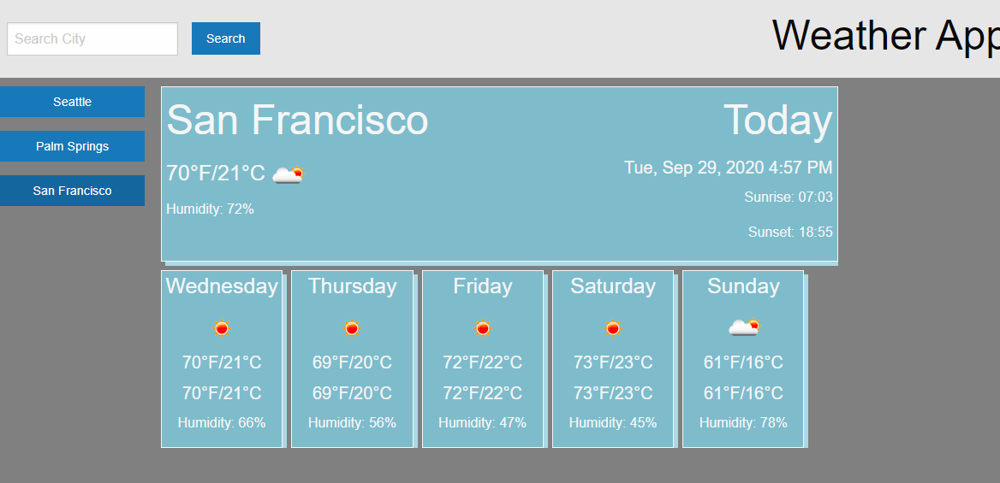
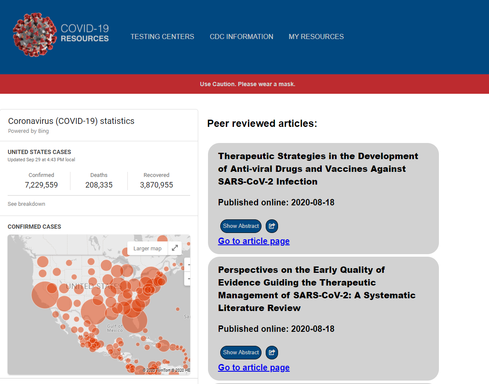

Portfolio

To do App
A fun and easy way to organize your work day! Color code each hour to tell the user what tasks to work on next! Also allows the user to save the task and revist their to do list later in the day!
Check it out!

Weather App
Quickly get the weather for the next 5 days! Search by cities and check to see if you need an umbrella or some sun screen!
Check it out!

Covid-Resource-Page
Stay up to date with the most recent Covid-19 studies and make sure to know where the nearest testing sites are!
Check it out!